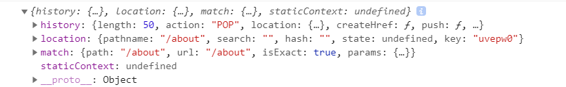
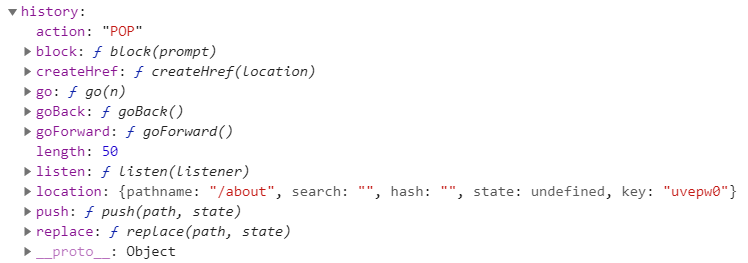
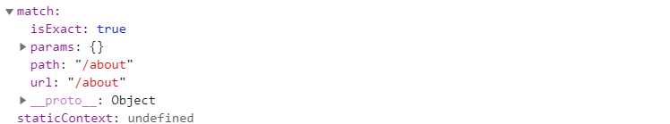
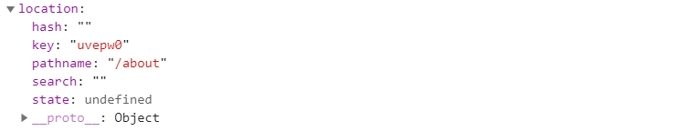

[React] Router : history, match, location
Router props
history, match, location은 리액트 라우트로 사용된 컴포넌트에 전달되는 props 중 하나로, 이 객체들를 통해 컴포넌트 내에 구현하는 메서드에서 라우터 API를 호출할 수 있다.
1 | // App.js |
1 | // About.jsx |
위에서 console.log(props)를 해주면 다음과 같은 결과를 볼 수 있다.
console.log(props)
반환된 객체(props)에서 history, location, match가 담겨있는 것을 확인할 수 있다.
history
history 객체는 브라우저의 history와 유사하다.
스택(stack)에 현재까지 이동한 url 경로들이 담겨있는 형태로 주소를 임의로 변경하거나 되돌아갈 수 있도록 해준다.
history객체는 mutable하므로 history.location보다는 location을 직접 사용해 주기를 권장한다.

- length : [number] 전체 history 스택의 길이
- action : [string] 최근에 수행된 action (PUSH, REPLACE or POP)
- location : [JSON object] 최근 경로 정보
- push(path, [state]) : [function] 새로운 경로를 history 스택으로 푸시하여 페이지를 이동
- replace(path, [state]) : [function] 최근 경로를 history 스택에서 교체하여 페이지를 이동
- go(n) : [function] : history 스택의 포인터를 n번째로 이동
- goBack() : [function] 이전 페이지로 이동
- goForward() : [function] 앞 페이지로 이동
- block(prompt) : [function] history 스택의 PUSH/POP 동작을 제어
match
match 객체에는 ‘Route path’와 URL이 매칭된 것에 대한 정보가 담겨져있다.
대표적으로 match.params로 path에 설정한 파라미터값을 가져올 수 있다.

- path : [string] 라우터에 정의된 path
- url : [string] 실제 클라이언트로부터 요청된 url path
- isExact : [boolean] true일 경우 전체 경로가 완전히 매칭될 경우에만 요청을 수행
- params : [JSON object] url path로 전달된 파라미터 객체
location
location 객체에는 현재 페이지의 정보를 가지고 있다.
대표적으로 location.search로 현재 url의 쿼리 스트링을 가져올 수 있다.

Reference